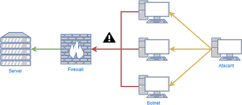
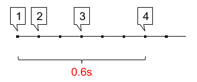
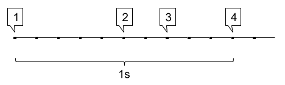
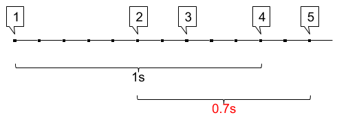
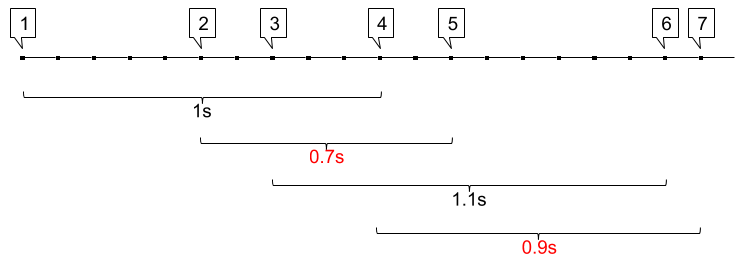
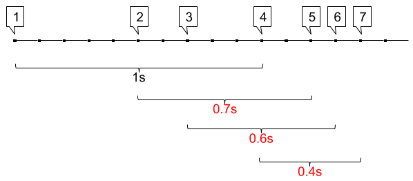

Desitjem implementar una sistema d'alerta d'atacs de denegació de servei (DDoS). Aquests atacs consisteixen en que l'atacant realitza una gran quantitat de connexions utilitzant una botnet.

Una forma de prevenir aquests atacs és mitjançant una política que denegui les connexions si aquestes es produeixen amb massa freqüència (connexions/temps).
Implementarem al firewall un sistema de detecció d'atacs DDoS, que alerti quan es produeixen més connexions de les permeses en un període de temps.
Establirem aquesta política a 4 connexions en 1 segon. Cada cop que es superi aquesta freqüència es mostrarà una alerta.
Input Format
La entrada consisteix en una seqüència de floats que indiquen el temps (T) que ha passat entre una connexió i la següent.
La seqüencia acaba amb -1.
Constraints
-
Output Format
S'imprimirà el missatge "DDos alert", cada cop que es superin les 4 connexions en menys d'1 segon.
Sample Input 0
0.1 0.2 0.3 -1
Sample Output 0
DDoS alert
Explanation 0

Es produeix la primera connexió
Passen 0.1 segons i es produeix la segona connexió
Passen 0.2 segons i es produeix la tercera connexió
Passen 0.3 segons i es produeix la quarta connexió
S'han produït 4 connexions en 0.6 segons
Sample Input 1
0.5 0.2 0.3 -1
Explanation 1

Es produeix la primera connexió
Passen 0.5 segons i es produeix la segona connexió
Passen 0.2 segons i es produeix la tercera connexió
Passen 0.3 segons i es produeix la quarta connexió
S'han produït 4 connexions en 1 segon, és a dir, no s'ha superat el límit.
Sample Input 2
0.5 0.2 0.3 0.2 -1
Sample Output 2
DDoS alert
Explanation 2

Es produeix la primera connexió
Passen 0.5 segons i es produeix la segona connexió
Passen 0.2 segons i es produeix la tercera connexió
Passen 0.3 segons i es produeix la quarta connexió
Passen 0.2 segons i es produeix la cinquena connexió
Entre la segona i la cinquena connexió han passat 0.7 segons, és a dir, s'ha superat el límit.
Sample Input 3
0.5 0.2 0.3 0.2 0.6 0.1 -1
Sample Output 3
DDoS alert
DDoS alert
Explanation 3

S'han produït dues alertes:
entre la segona i cinquena connexió (0.2+0.3+0.2)
i entre la quarta i la setena (0.2+0.6+0.1).
Sample Input 4
0.5 0.2 0.3 0.2 0.1 0.1 -1
Sample Output 4
DDoS alert
DDoS alert
DDoS alert
Explanation 4

0.2+0.3+0.2
0.3+0.2+0.1
0.2+0.1+0.1
Sample Input 5
0.5 0.2 0.3 1.2 0.1 0.1 0.1 0.1 0.7 0.4 0.1 0.2 0.6 -1
Sample Output 5
DDoS alert
DDoS alert
DDoS alert
DDoS alert
DDoS alert
Sample Input 6
0.3 0.3 0.3 0.2 0.2 0.5 0.2 0.1 0.1 0.1 0.1 0.7 0.4 0.1 0.2 0.6 0.9 0.1 -1
Sample Output 6
DDoS alert
DDoS alert
DDoS alert
DDoS alert
DDoS alert
DDoS alert
DDoS alert
DDoS alert
DDoS alert
DDoS alert
DDoS alert
DDoS alert